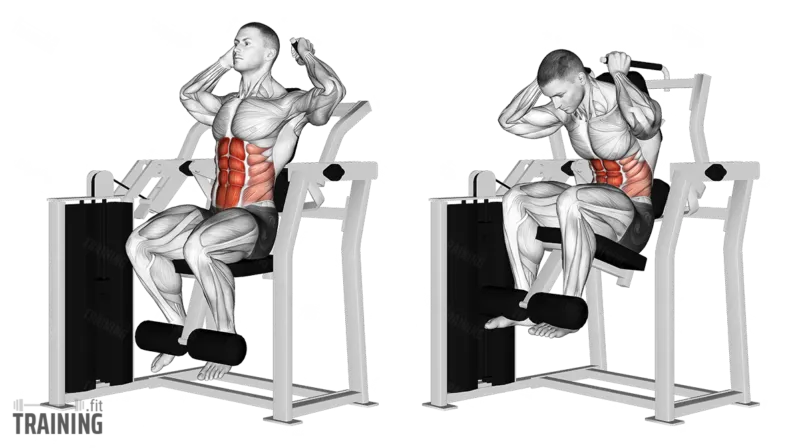

|
Arnold Press |
Anterior, Lateral, Posterior |
Dumbbell'ları avuç içleriniz size bakacak şekilde çene hizasında tutarak başlayın. Ağırlıkları yukarı kaldırırken avuç içlerinizi öne doğru çevirin ve kollarınızı tamamen yukarı uzatın. Kontrollü bir şekilde başlangıç pozisyonuna dönün. |
Sırtınızı düz tutun, omuz eklemlerine aşırı yük bindirmemek için hareketi kontrollü bir şekilde yapın. |
 |
Band Reverse Fly |
Rhomboid, Trapez, Posterior Deltoid |
Egzersiz bandını omuz hizasında sabitleyin, her iki elinizle tutarak kollarınızı hafif bükülü şekilde yana doğru açın ve ardından kontrollü bir şekilde başlangıç pozisyonuna dönün. |
Sırtınızı dik tutun, hareketi kontrollü bir şekilde yaparak omuz eklemlerine aşırı yüklenmekten kaçının. |
|
Shoulder Press |
Anterior, Lateral |
Dumbbell'ları omuz hizasında avuç içleriniz öne bakacak şekilde tutun, ağırlıkları yukarı kaldırarak kollarınızı tamamen düzleştirin, ardından kontrollü bir şekilde başlangıç pozisyonuna indirin. |
Sırtınızı dik tutun, omuz eklemlerine aşırı yük bindirmemek için hareketi kontrollü yapın ve dirseklerinizi çok fazla dışarı açmaktan kaçının. |
|
Front Raise |
Anterior, Pectoralis Major |
Dumbbell'ları avuç içleriniz vücudunuza bakacak şekilde tutarak, kollarınızı düz bir şekilde omuz hizasına kadar kaldırın ve ardından kontrollü bir şekilde başlangıç pozisyonuna indirin. |
Sırtınızı dik tutun, hareket sırasında ağırlığı sallamaktan kaçının ve omuz eklemlerine aşırı yük bindirmemek için kontrollü bir tempoda yapın. |
|
Lateral Raise |
Lateral Deltoid |
Dumbbell'ları avuç içleriniz birbirine bakacak şekilde tutarak, kollarınızı düz bir şekilde yanlara doğru omuz hizasına kadar kaldırın ve kontrollü bir şekilde başlangıç pozisyonuna indirin. |
Sırtınızı dik tutun, hareketi kontrollü bir şekilde yapın ve kollarınızı omuz hizasından yukarı kaldırmaktan kaçının. |
|
Reverse Butterfly |
Posterior deltoid, Rhomboid, Trapez |
Bir butterfly makinesinde yüzünüz öne dönük oturun, tutacakları kavrayarak kollarınızı yanlara doğru açın ve sırt kaslarınızı sıkarak hareketi tamamlayın. Ardından kontrollü bir şekilde başlangıç pozisyonuna dönün. |
Omuz eklemlerine aşırı yük bindirmemek için hareketi kontrollü yapın ve sırtınızı dik tutarak hareket sırasında bükülmekten kaçının. |
|  |
Abdominal Crunch |
Rectus Abdominis |
Dizleriniz bükülü ve ayaklarınız yere basar şekilde sırtüstü yatın, ellerinizi başınızın arkasına veya göğsünüzün üzerine koyarak üst gövdenizi yukarı doğru kaldırın, ardından kontrollü bir şekilde başlangıç pozisyonuna dönün. |
Boynunuzu zorlamamak için ellerinizle çekmekten kaçının ve hareketi karın kaslarınızı kullanarak kontrollü bir şekilde yapın. |
|
Abdominal Twist |
Internal ve External Obliques |
Dizler bükülü, ayaklar yerde veya havada olacak şekilde yere oturun, gövdenizi bir yöne çevirerek elinizdeki ağırlığı veya sadece vücut ağırlığınızı kullanarak hareketi tamamlayın. Daha sonra diğer tarafa dönerek tekrarlayın. |
Hareket sırasında sırtınızı dik tutun, belinizi zorlamaktan kaçının ve dönüşleri kontrollü bir şekilde yapın. |